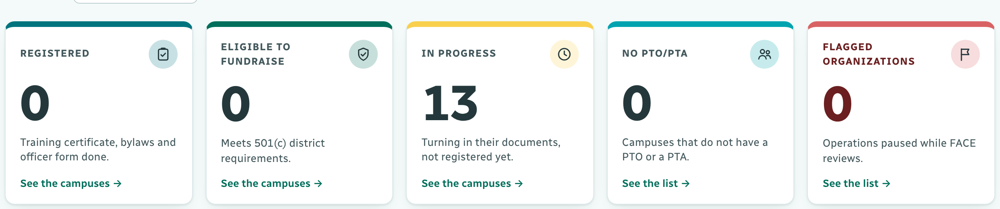
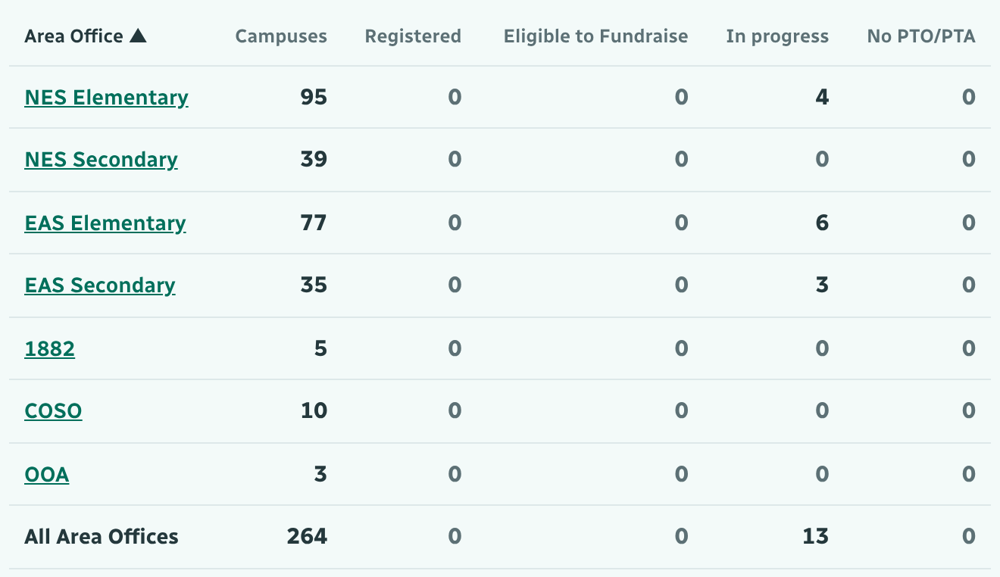
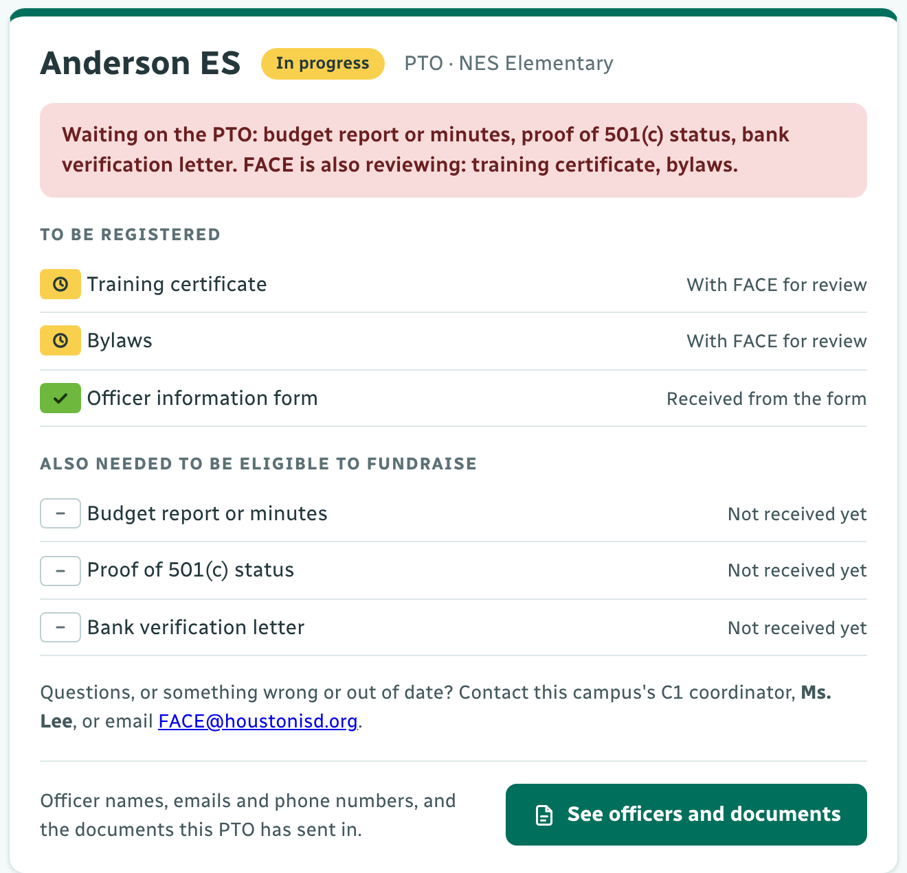
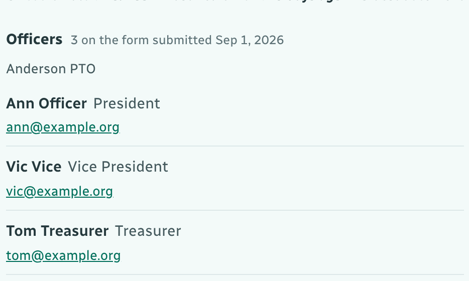

Open the dashboard link with your Houston ISD Google account. There is no sign-in and no passcode. Everything is view only, so nothing can be changed by accident.
Registered: training certificate, bylaws and officer form done. Eligible to Fundraise: meets 501(c) district requirements (all six documents). In progress: turning documents in. No PTO/PTA. Flagged Organizations: paused while FACE reviews. Click a tile to list those campuses. Choose your office in Area Office at the top to see only its numbers.

Under the tiles, By Area Office shows each office's campuses and how many are registered, eligible to fundraise or in progress. Click your Area Office to list its campuses. FACE can also send you a link that opens straight on your office.

Open My campus and type part of your campus name in Find. The card shows what is done, what is still needed, and whether the next step is with your PTO/PTA or with FACE.

At the bottom of the card, click See officers and documents: each officer's name, position, email and phone, and the documents the PTO/PTA has sent, with links to open them. ← Back returns you.

Open Campuses. Search for a campus, or click a filter such as Registered, Eligible to Fundraise, PTAs or Nothing received yet. Click a campus to open it.
Each row shows the six documents: ✓ accepted, ◷ with FACE for review, ! sent back to fix, – not received yet.
Something wrong or out of date? Contact your campus's C1 coordinator (named on the card) or email FACE@houstonisd.org.
Nothing received yet: your PTO/PTA has not turned anything in. Encourage it to send its documents.
Flagged: the organization's operations are paused while FACE reviews. The card says why and whom to contact.
A file asks for access? Ask FACE to share the Parent Org Documents folder with you.